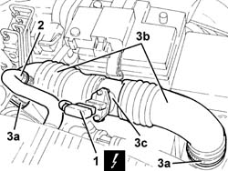
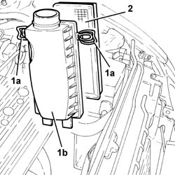
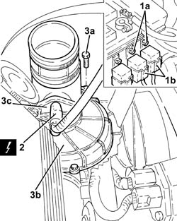
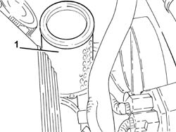
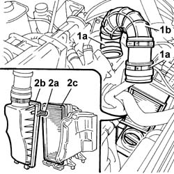
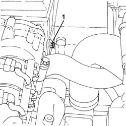
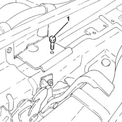
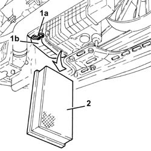

1048A14 air cleaner filtering element - replace.
- Path
- Procedures > 10 ENGINE > 1048 ENGINE AIR SUPPLY CIRCUIT > 1048A vacuum air circuit > 1048A14 air cleaner filtering element - replace.
- Kind
- repair procedure (removal / refitting; the operation number is the code)
- Applies to
- all engines; all production periods
- Interactive page
- https://sloeber94.github.io/elrnDB-a147/en/#/3024823
Applies to: engines: 1.6 TS; all production periods
 Removing
Removing
 Refitting
RefittingEnsure that the ignition key is in the OFF postition, then disconnect the battery negative terminal.
 | Name | Connector |
|---|---|---|
- | Battery |
1. Disconnect the electrical connection from the air flow meter.
| Name | Connector |
|---|---|---|
1 | Air flow meter |
Disconnect the electrical wiring for the flow meter from the fastening on the air intake sleeve.
2. Disconnect the oil vapour recirculation pipe from the air intake duct.
3. Undo the bolts (3a) and remove the air intakehouse (3b) complete with air flow meter (3c).

Applies to: engines: 1.6 TS; all production periods
1. Undo fastening clips (1a) and remove the air filter cover (1b).
2. Remove the air filter element.

Applies to: engines: 1.6 TS; all production periods
Refitting
RemovingPlace a new filter element for the air filter back in the housing.
Place the air filter cover back in its housing and secure with clips.
Refit the air intake hose with air flow meter and secure with collars.
Connect the oil vapour recirculation pipe to the air intake duct.
Connect the electrical connection to the air flow meter and secure the electrical wiring to the fastening on the air intake sleeve.
Connect the battery terminal (-).
Applies to: engines: 2.0 TS; all production periods
Removing
RefittingEnsure that the ignition key is in the OFF postition, then disconnect the battery negative terminal.
| Name | Connector |
|---|---|---|
- | Battery |
1. Disconnect the electrical connection from the air flow meter.
| Name | Connector |
|---|---|---|
1 | Air flow meter |
Disconnect the electrical wiring for the flow meter from the fastening on the air intake sleeve.
2. Disconnect the oil vapour recirculation pipe from the air intake duct.
3. Undo the bolts (3a) and remove the air intakehouse (3b) complete with air flow meter (3c).
Applies to: engines: 2.0 TS; all production periods
1. Undo fastening clips (1a) and remove the air filter cover (1b).
2. Remove the air filter element.

Applies to: engines: 2.0 TS; all production periods
Refitting
RemovingPlace a new filter element for the air filter back in the housing.
Place the air filter cover back in its housing and secure with clips.
Refit the air intake hose with air flow meter and secure with collars.
Connect the oil vapour recirculation pipe to the air intake duct.
Connect the electrical connection to the air flow meter and secure the electrical wiring to the fastening on the air intake sleeve.
Connect the battery terminal (-).
Applies to: engines: 3.2 V6; all production periods
Removing
RefittingProceed with removal 1048A28 vacuum air circuit resonator pipe - r+r .
1. Undo the nuts (1a) and move the relays (1b) sideways.
2. Disconnect the electrical connection from the air flow meter.
| Name | Connector |
|---|---|---|
2 | Air flow meter |
3. Undo the bolts (3a) and remove the air filter cover (3b) complete with air flow meter (3c).

Applies to: engines: 3.2 V6; all production periods
1. Remove the air filter filter element.

Applies to: engines: 3.2 V6; all production periods
Refitting
Removing.
Place a new filter element for the air filter back in the housing.
Place the air filter cover, complete with air flow meter, in its housing and secure it using the bolts.
Connect the electrical connection to the air flow meter.
Place the relays in their housings and secure them using the nuts.
Proceed with refitting 1048A28 vacuum air circuit resonator pipe - r+r .
Applies to: engines: 1.9 JTD 8V; all production periods
Removing
Refitting1016A10 sound-proofing cover - r + r
1. Loosen the bands (1a) and release the air intake pipe to the turbocharger (1b) without disconnecting the air flow meter electrical connection.
2. Open retaining clips (2a), remove cover (2b) from its seat on the casing and remove filter element (2c).

Applies to: engines: 1.9 JTD 8V; all production periods
Refitting
RemovingChange the air filter element.
Fit the air filter casing and secure with clips.
Connect the air inlet hose to the turbocharger.
Applies to: engines: 1.9 JTD 16V; all production periods
Removing
RefittingPosition the vehicle on the ramp.
Proceed with removal 7025A12 Engine front sound insulation COVER - R.R. .
Proceed with removal 7025A14 Bonnet LID - R.R. .
Proceed with removal 1016A10 sound-proofing cover - r + r .
1. Undo the nut fixing the air filter assembly to the battery drip tray.

Applies to: engines: 1.9 JTD 16V; all production periods
1. Undo the bolt securing the cold air intake to the crossmember.

Applies to: engines: 1.9 JTD 16V; all production periods
Proceed with removal 7055B54 under-engine guard - r r .
Release the air filter casing from the mounting bracket pushing it upwards.
1. Release the fastening clips (1a) and open the air filter casing cover (1b) as much as necessary.
2. Remove the air filter element.

Applies to: engines: 1.9 JTD 16V; all production periods
Refitting
RemovingPlace a new filter element for the air filter back in the housing.
Close the air filter casing cover and secure with clips.
Place the air filter casing in its housing so that the lower fastenings are housed in the mounting bracket seats.
Proceed with refitting 7055B54 under-engine guard - r r .
Tighten the bolt securing the cold air intake to the crossmember.
Tighten the nut fixing the air filter assembly to the battery drip tray.
Proceed with refitting 1016A10 sound-proofing cover - r + r .
Proceed with refitting 7025A14 Bonnet LID - R.R. .
Proceed with refitting 7025A12 Engine front sound insulation COVER - R.R. .
Remove the car from the ramps.
Topics linked from this page (9)
- 1016A10 sound-proofing cover - r + r
- 1048A28 vacuum air circuit resonator pipe - r+r
- 5530B10 battery - r+r
- 5530B52 Battery DRIP TRAY/SUPPORT - R.R.
- 7025A12 Engine front sound insulation COVER - R.R.
- 7025A14 Bonnet LID - R.R.
- 7055B54 under-engine guard - r r
- A1B Battery ( Connectors )
- K41 Air flow meter ( ENGINE )
Topics that link to this page (17)
- B10 ENGINE DOES NOT START / UNDER NO CIRCUMSTANCES
- B13 ENGINE STARTS WITH DIFFICULTY'
- D02 ENGINE NOT RUNNING SMOOTHLY / (LOSING POWER)
- D03 ENGINE NOT RUNNING SMOOTHLY / (IRREGULAR OPERATION)
- D05 ENGINE DOES NOT PRODUCE BEST PERFORMANCE
- D10 ENGINE IDLE IRREGULAR
- W11 EXCESSIVE EXHAUST FUMES'
- X01 EXCESSIVE FUEL CONSUMPTION
- 0010K20 20,000km service coupon, emission control version
- 0010K40 40,000km service coupon, emission control versions
- 0010K60 60,000km service coupon - emission control versions
- 0010K80 80,000km service coupon - emission control versions
- 0010M01 100,000km service coupon, emission control versions
- 0010M20 120,000km service coupon, emission control versions
- 0010M40 140,000km service coupon - emission control versions
- 0010M60 160,000km service coupon - emission control versions
- 0010M80 180,000km service coupon - emission control versions